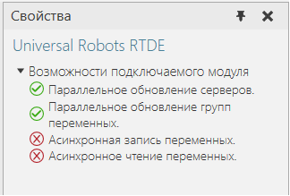
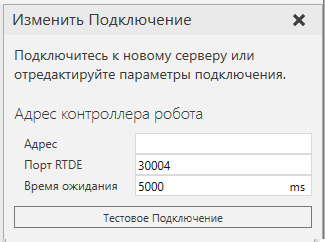
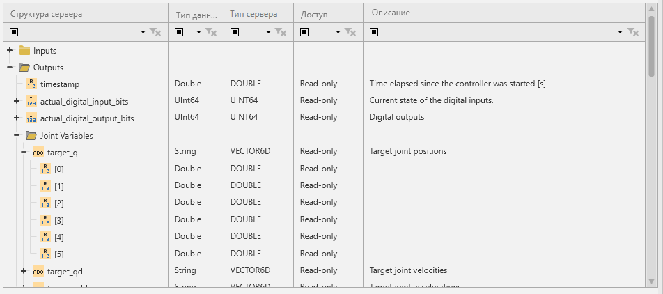
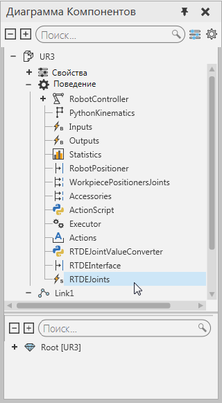
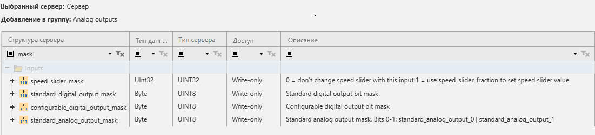

Плагин Universal Robots RTDE позволяет подключать контроллеры роботов Universal Robot серии CB3 с интерфейсом RTDE. Вы также можете подключить симулятор контроллера робота URSim с интерфейсом RTDE. Например, вы можете установить соединение с PolyScope, контроллером виртуального робота Universal Robots.

Возможности
Вы можете проверить возможности подключаемого модуля Universal Robots RTDE на панели Свойства.
Плагин
1.На панели Конфигурация подключения, выберите Universal Robots RTDE.
2.На панели Свойства, разверните Возможности плагина подключения.

Принципы работы
Интерфейс обмена данными в реальном времени (RTDE) обеспечивает циклический поток обновлений значений от контроллера и прослушивает входные данные. Интерфейс обновляется (отправляет и обрабатывает пакеты данных) с фиксированной частотой и основан на двоичном протоколе прикладного уровня, передаваемом через (небезопасную) связь через сокеты TCP/IP. Контроллер робота использует TCP-порт 30004 для интерфейса. Реализация клиента RTDE плагина подключения использует автоматически назначенный порт (либо .NET, либо, возможно, Windows) для сокета.
Примечание: Интерфейс RTDE доступен и всегда включен в контроллерах роботов Universal Robots серии CB3 с программным обеспечением версии 3.2.19171 или новее.
Режимы
Основной принцип работы включает два режима: конфигурация и выполнение. Первый, клиент настраивает с сервером данные, которые он хочет получить, и данные, которые он хочет отправить. Это делается в режиме конфигурации. После настройки конфигурации клиент может запросить у контроллера переход в рабочий режим, при котором контроллер отправляет запрошенные данные с фиксированной частотой 125 Гц, а клиент может отправлять свои данные с предпочтительной скоростью. Режим выполнения также можно приостановить по запросу клиента для возврата в режим конфигурации.
Обмен данными
Пакеты данных, которые клиент и контроллер посылают друг другу, определяются рецептами ввода и вывода в режиме конфигурации.
·Вход — это поток данных от клиента к контроллеру.
·Выход — это поток данных от контроллера к клиенту.
Рецепты содержат одну или несколько переменных из известного фиксированного набора, а связанные с ними пакеты данных содержат значения для всех переменных в рецепте.
Текущая версия протокола RTDE поддерживает только один выходной рецепт для каждого клиента, но для каждого клиента может быть определено до 255 входных рецептов. Кроме того, невозможно удалить входной рецепт без отключения и создания совершенно нового. Это означает, что добавление/удаление пары переменных или активация/деактивация группы переменных всегда приводит к обновлению рецепта. Поскольку обновление рецепта может быть выполнено только в режиме конфигурации, клиентская реализация RTDE автоматически запрашивает паузу у контроллера, а затем либо a) переопределяет выходной рецепт, общий для всех групп переменных, либо б) регистрирует новый входной рецепт для активированной группы переменных.
Протокол RTDE не предоставляет никакого способа опроса контроллера на предмет обновления значений. Это приводит к некоторым ограничениям, которые отличают плагин подключения RTDE от других. Плагин подключения RTDE управляет локальным кэшем значений переменных для всех сконфигурированных рецептов (активных групп переменных). Это позволяет использовать режим циклического обновления для считывания значений выходных рецептов с любой желаемой частотой, а также отправлять контроллеру целые данные входных рецептов в режиме обновления по событиям. Однако, поскольку обновления выходных рецептов принимаются, а входные данные рецептов отправляются асинхронно, функция времени задержки обновления ядра Connectivity не работает с подключаемым модулем RTDE. Измеренное время — это только время обработки для получения данных в кэше или из него. То есть они не включают сетевую задержку или даже возраст полученных выходных данных рецепта, когда кэш считывается с использованием режима циклического обновления.
Примечание: Поскольку контроллер обрабатывает входные пакеты рецептов RTDE с фиксированной частотой (номинально 125 Гц), он будет пропускать значения, если они отправляются быстрее, чем при симуляции. Контроллер использует только последнее полученное значение для каждой переменной, если в течение цикла обновления контроллера получено несколько значений. Значения входных переменных контроллера сохраняются, поэтому их не нужно отправлять с фиксированной скоростью. Переменные маски являются исключением: они не сохраняют свои значения между циклами обновления.
Настройки соединения
Для подключения модуля Universal Robots RTDE требуется IP-адрес и порт RTDE контроллера робота, а также время ожидания (в миллисекундах). Порт всегда должен быть 30004 для обеспечения безопасности в будущем. Значение тайм-аута используется для начальных операций подключения и синхронизации, включая все изменения конфигурации рецептов.
Чтобы определить новое подключение к серверу:
1.На панели Конфигурация подключения, выберите Universal Robots RTDE.
2.На вкладке Подключения, в группе Сервер, нажмите Добавить сервер .
3.На вкладке Изменить подключение, наберите Адрес , Порт RTDE а также Время ожидания, а затем щелкните Тестовое подключение.
4.Если соединение установлено, нажмите Ok, а затем щелкните Применить.

Адресное пространство
Интерфейс RTDE определяет фиксированный набор переменных, каждая из которых может быть прочитана или записана. Входные переменные контроллера не могут быть прочитаны клиентом, а выходные переменные контроллера не могут быть записаны. Однако есть некоторые отдельные переменные, которые делают чтение и запись одним и тем же, например, цифровые выходы контроллера.
·Вход в контроллер (только для записи в функции подключения): standard_digital_output
·Выход с контроллера (только для чтения в функции подключения): fact_digital_output_bits
Адресное пространство RTDE не имеет иерархии, и переменные могут быть прочитаны/записаны только целиком как часть пакетов данных рецепта. Однако, поскольку ядро плагина Подключения обрабатывает только базовые типы данных, модуль подключений RTDE обеспечивает доступ к компонентам векторных переменных и отдельным битам целочисленных переменных. Одноразрядный доступ необходим, поскольку цифровые входы и выходы контроллера доступны только как целые числа, а не как отдельные логические значения. Плагин подключения также обеспечивает доступ для чтения (запись не поддерживается) к векторным выходным переменным из контроллера в виде строк. Элементы вектора преобразуются в десятичные строки с полной точностью для значений с плавающей запятой используя "." как разделитель. Затем строки элементов соединяются одним пробелом в качестве разделителя.
Плагин подключения RTDE использует жестко закодированную информационную модель адресного пространства сервера, которая обеспечивает возможность просмотра. Эта модель соответствует версии контроллера UR 3.3. Протокол RTDE не включает функциональность для получения информации о доступных переменных на контроллере. Если новые версии программного обеспечения контроллера добавляют в интерфейс переменные, они будут недоступны без обновления подключаемого модуля.
Функция просмотра представляет переменные в более удобной иерархической структуре папок и создает дочерние узлы переменных для векторных компонентов и битов в целых числах. Векторы также могут содержать целочисленные переменные, к которым можно обращаться побитно.
Пример. Просмотр векторных переменных

Важно: Переменные интерфейса RTDE робота используют радианы в качестве единицы измерения углов в переменных, например, значения текущего и целевого соединения. Это означает, что они не могут быть напрямую связаны со свойствами Value объектов DOF в компонентах робота UR. Чтобы обойти эту проблему, компоненты робота UR, доступные на панели Каталога, были смоделированы с поведением строкового сигнала «RTDEJoints», которое можно сопоставить с выходной переменной «target_q» в контроллере. Сценарий в роботе используется для получения событий от этого сигнала, анализа его значения и использования немедленных движений для перехода компонента робота в полученную позу.

Переменные маски ввода
Четыре входа контроллера имеют отдельные переменные маски. Эти маски действуют как фильтр для применения значений, отправленных клиентом. Идея состоит в том, что клиент RTDE не обязательно хочет перезаписывать все биты, например, в переменной, управляющей «стандартными цифровыми выходами» робота. Это позволяет управлять некоторыми битами переменной из программы робота на контроллере и некоторыми из клиентов RTDE. Эти маски накладывают некоторые ограничения на использование входных переменных в Рациональном Производствке
Важно: Интерфейс RTDE не позволяет более чем одному клиенту обращаться к одной и той же входной переменной контроллера.

Пример. Условия изменения стандартного состояния цифрового выхода на контроллере робота
1.Переменные standard_digital_output (UINT8) и standard_digital_output_mask (UINT8) должны быть зарегистрированы в одном рецепте ввода.
2.Для применения каждого бита (установленного в высокое или низкое состояние) в standard_digital_output значение standard_digital_output_mask должно иметь 1 в соответствующем бите. Они должны поступать в одном и том же пакете входных данных рецепта, а это означает, что более ранняя или более поздняя установка маски не приведет к фактическому изменению цифровых выходов на контроллере. Создается впечатление, что маска всегда обнуляется на контроллере после обработки каждого пакета входных данных.
Последствия этих условий для функции Подключения:
1.Входные переменные контроллера с масками должны иметь переменную и переменную маски в одной и той же группе переменных.
2.Если используется режим обновления событийно-управляемый, маска должна быть установлена на постоянное значение, иначе изменения значений могут быть потеряны из-за того, что изменения передаются в разных пакетах входных данных.
Поддерживаемые типы данных
Плагин Universal Robots RTDE поддерживает доступ ко всем доступным переменным. Все знаковые и беззнаковые целые переменные могут быть объединены в пары напрямую или отдельные биты могут быть объединены в пары как логические значения. Векторы можно читать как строки, но нельзя записывать целиком.
Тип RTDE Type |
Тип .NET |
Примечания |
|---|---|---|
DOUBLE |
System.Double |
Отсутствуют |
INT32 |
System.Int32 |
Отсутствуют |
UINT16 |
System.UInt16 |
Отсутствуют |
UINT32 |
System.UInt32 |
Integer в Рациональном Производстве являются 32-битными. |
UINT64 |
System.UInt64 |
Integer в Рациональном Производстве являются 32-битными. |
UINT8 |
System.Byte |
Отсутствуют |
VECTOR3D |
System.String |
Преобразуется в одну строку плагином RTDE при считывании из контроллера. Элементы компонентов (3 x DOUBLE) могут считываться и записываться отдельно. |
VECTOR6D |
System.String |
Преобразуется в одну строку плагином RTDE при считывании из контроллера. Элементы компонентов (6 x INT32) могут считываться и записываться отдельно. |
VECTOR6INT32 |
System.String |
Преобразуется в одну строку плагином RTDE при считывании из контроллера. Элементы компонентов (6 x INT32) могут считываться и записываться отдельно. |
VECTOR6UINT32 |
System.String |
Преобразуется в одну строку плагином RTDE при считывании из контроллера. Элементы компонентов (6 x UINT32) могут быть прочитаны и записаны отдельно. |
Производительность
Задержка связи в основном определяется фиксированной частотой обновления контроллера UR.
Примечание: Функциональность синхронизации ядра Подключения не является точной с этим плагином.
Использование событийно-управляемого режима обновления рекомендуется для групп переменных с потоком данных Симуляция на сервер, если только частота обновления не слишком высока для симуляции.
Для потока данных Симуляции на сервер рекомендуется использовать режим циклического обновления, но установка частоты обновления выше 125 Гц не дает никаких преимуществ. Контроллер использует только последнее полученное значение для каждой переменной, если в течение цикла обновления контроллера получено несколько значений.
Примечание: Cобытийно-управляемый режим обновления для Симуляции на сервер может отправлять много обновлений, которые теряются из-за скорости обновления контроллера. Переменные маски могут работать не так, как ожидалось, из-за того, что маска и замаскированное значение поступают в разных входных пакетах обновления значения рецепта.